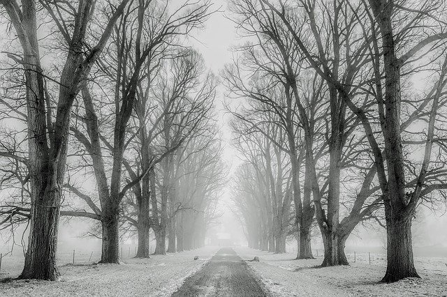

Grosir Produk Perjalanan - Peralatan

Tourist amunisi di toko online, produk untuk pariwisata dan hiburan di toko online Kiev, produk untuk berkemah dan hiburan yang intens, biaya, penjualan kembali produk wisata.
Beli amunisi turis
.Pariwisata hari ini memiliki kesempatan untuk menjadi begitu nyaman, pada kenyataannya, itu tidak akan mudah untuk membedakannya dari kota pelajar. Ayo! Hampir Anda semua akan menjawab dan tidak percaya kata-kata ini! Ini adalah bisnis Anda, tetapi kami, tim pengembang aktif dari toko online terbesar "At Kostra", tahu apa yang sedang kita bicarakan! Kami adalah salah satu dari orang-orang yang menyukai hiburan dan pariwisata, kehidupan di alam dan tempat-tempat menarik lainnya pada topik ini. Tapi perjalanan kami selalu menguntungkan dan tidak berbahaya, berkat peralatan wisata yang penting. Kami telah membuat bagian ini untuk penggemar kegiatan luar ruang yang nyaman!
Que tipo de artigos de viagem e lazer posso comprar na loja online?
Ithaku, untuk bersantai di pedesaan dengan nyaman, mengikuti jejak merawat produk wisata seperti "Turis": kantong tidur, kasur, peralatan gas, pemanas, tenda, pulau bio, sepatu wisata, dll. Untuk untuk navigasi terbaik di wilayah ini, beli navigasi GPS, kompas, radio mini, lampu jauh, dll. Selain itu, untuk makanan, Anda dapat membeli bangkai, set piknik, panggangan, pemanggang, berkualitas tinggi dan agak lezat, untuk makanan. jauh bukan daftar tujuan wisata mutlak berdandan, Anda bisa mendapatkan pada tingkat mudah tersedia, kunjungi toko online kami. Dengan demikian, memiliki segalanya untuk keamanan dan kenyamanan, Anda akan selalu berada dalam suasana hati yang baik, karena kenyataan bahwa sebenarnya tidak ada ketidaknyamanan wisata yang tidak mengancam! Di situs web kami, Anda tidak hanya dapat membeli barang-barang yang menarik dan perlu untuk hiburan, tetapi juga membuat suasana berkemah menjadi benar. Ajukan pertanyaan Anda sendiri tentang telepon atau melalui formulir umpan balik! Ingat, jika produk sangat dibutuhkan untuk Anda di jalan, tetapi situasi ekonomi agak menakutkan - jangan putus asa! "Tanpa api unggun" mengundang Anda untuk membeli paket angsuran dengan kriteria yang menguntungkan. Tanyakan manajer kami ini dan pertanyaan lain untuk konsultasi menyeluruh!